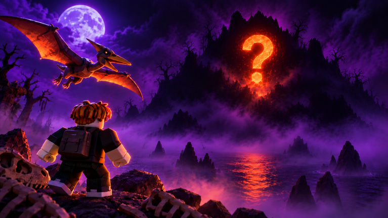

🦖 Ride a Dino: Halloween Island Update pornește duminică la 18:00

🦖 Ride a Dino primește un update de Halloween: Halloween Island Update 🎃
✅ Ce scrie pe pagina oficială a evenimentului (verificat sâmbătă, ~13:15 RO):
- 🌕 E lună plină, iar dincolo de ceață se trezește o insulă uitată, blestemată
- 🦕 Insula e plină de dinozauri noi, pe care niciun rider nu i-a mai văzut
- 🏆 Doar cei mai curajoși vor lua unul acasă
- 👻 Subtitlul oficial: „Enter if you dare.”
⏰ Când:
- 🕕 Start: duminică 25 oct, 18:00 RO
- 🏁 Final: duminică 1 nov, 16:00 RO
⚠️ În noaptea de sâmbătă spre duminică se dă ora înapoi, orele de mai sus sunt deja pe ora de iarnă.
📅 Evenimentul pe Roblox: https://www.roblox.com/events/7928673331056869969
Ce dino vrei să prinzi primul? Scrie în comentarii!
Follow pe TikTok @vexu_online și abonare pe YouTube la VEXU Online. Follow = Au ce bile! 💥